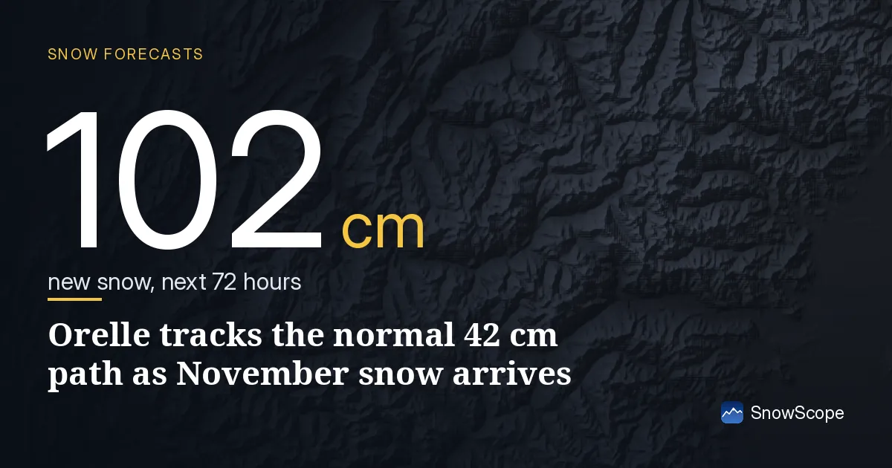

+102 cm at Orelle: the 72-hour snow forecast table (17 November)
The daily ranking: most new snow forecast for the next 24 hours and until 20 November, in Europe, Morocco and North America, snow line included. The table ranks forecasts, not certainties: the top places are usually right, the exact amounts less so.
See the live snow forecast for Orelle in the SnowScope appSnow depth, powder alerts and the 3D map, free.
Europe and Morocco
Orelle (France): 102 cm within 72 hours (22 cm in the next 24 hours), snow line about 2,500 m. Courmayeur (Italy): next 24 hours 28 cm, 72 hours 100 cm, snow line near 2,000 m. Balme (France / Switzerland): 99 cm within 72 hours (20 cm in the next 24 hours), snow line about 2,000 m.
| # | Resort | Region | +24 h | +72 h | Snow line |
|---|---|---|---|---|---|
| 1 | Orelle | Alps · France | 22 cm | 102 cm | 2,500 m |
| 2 | Courmayeur | Alps · Italy | 28 cm | 100 cm | 2,000 m |
| 3 | Balme | Alps · France / Switzerland | 20 cm | 99 cm | 2,000 m |
| 4 | Valmorel | Alps · France | 18 cm | 97 cm | 2,100 m |
| 5 | Les Houches | Alps · France | 25 cm | 96 cm | 2,000 m |
| 6 | Arêches Beaufort | Alps · France | 23 cm | 96 cm | 2,100 m |
| 7 | Evasion Mont Blanc | Alps · France | 23 cm | 93 cm | 2,100 m |
| 8 | Les Arcs | Alps · France | 22 cm | 92 cm | 2,100 m |
| # | Resort | Region | +24 h | +72 h | Snow line |
|---|---|---|---|---|---|
| 1 | China Peak | US West · United States | 3 in (7 cm) | 35 in (88 cm) | 6,600 ft (2,000 m) |
| 2 | Mammoth Mountain | US West · United States | 4 in (9 cm) | 31 in (80 cm) | 6,600 ft (2,000 m) |
| 3 | June Mountain | US West · United States | 4 in (10 cm) | 31 in (78 cm) | 6,900 ft (2,100 m) |
| 4 | Kingvale | US West · United States | 8 in (21 cm) | 30 in (77 cm) | – |
| 5 | Badger Pass | US West · United States | 5 in (12 cm) | 30 in (77 cm) | 5,900 ft (1,800 m) |
| 6 | Boreal | US West · United States | 8 in (20 cm) | 30 in (75 cm) | 5,200 ft (1,600 m) |
| 7 | Kirkwood | US West · United States | 7 in (19 cm) | 30 in (75 cm) | 6,200 ft (1,900 m) |
| 8 | Palisades Tahoe Alpine Meadows | US West · United States | 7 in (19 cm) | 29 in (73 cm) | 5,200 ft (1,600 m) |
| # | Resort | Region | +24 h | +72 h | Snow line |
|---|---|---|---|---|---|
| 1 | Fortress | Western Canada · Canada | 6 cm | 6 cm | 1,400 m |
| 2 | Nakiska | Western Canada · Canada | 6 cm | 6 cm | 1,500 m |
| 3 | WinSport (Canada Olympic Park) | Western Canada · Canada | 6 cm | 6 cm | 800 m |
| 4 | Castle | Western Canada · Canada | 5 cm | 6 cm | 1,200 m |
| 5 | Pass Powderkeg ski | Western Canada · Canada | 5 cm | 6 cm | 1,100 m |
| 6 | Banff Sunshine Village | Western Canada · Canada | 4 cm | 4 cm | 1,400 m |
| 7 | Mt Norquay | Western Canada · Canada | 4 cm | 4 cm | 1,400 m |
| 8 | Wapiti | Western Canada · Canada | 3 cm | 4 cm | 1,400 m |

United States
China Peak (United States): next 24 hours 3 in (7 cm), 72 hours 35 in (88 cm), snow line near 6,600 ft (2,000 m). Mammoth Mountain (United States): 31 in (80 cm) within 72 hours (4 in (9 cm) in the next 24 hours), snow line about 6,600 ft (2,000 m). June Mountain (United States): next 24 hours 4 in (10 cm), 72 hours 31 in (78 cm), snow line near 6,900 ft (2,100 m).

Canada
Fortress (Canada): 6 cm within 72 hours (6 cm in the next 24 hours), snow line about 1,400 m. Nakiska (Canada): next 24 hours 6 cm, 72 hours 6 cm, snow line near 1,500 m. WinSport (Canada Olympic Park) (Canada): 6 cm within 72 hours (6 cm in the next 24 hours), snow line about 800 m.
Coming up
The snow line in the table is the forecast freezing level less about 300 m; it moves, so treat it as a guide.
Small print that matters: resort values are model estimates for an area, stations measure a single point.
Forecasts a few days ahead can change: look at the map again the day before you travel.
Tips for skiers
- Fresh snow changes fast once the sun is on it: it settles, gets wet and loses its lightness. Morning is the time to ski it.
- Warm air above the resort means slush lower down. Go high and plan the day around the top lifts.
- Before you ski off-piste or go touring, read the official avalanche bulletin (links below).
- Snow on the map does not mean a resort is open: check lifts and opening dates on the resort's website.
- Get a powder alert in the SnowScope app to know when Orelle gets fresh snow.
About these numbers
Resort snow depths are the deepest snow on the resort's upper slopes from the SnowScope snow model (about 1 km, run of 16 November); they are estimates for an area, not a measurement at one point. Station values are measurements on the date shown. Forecasts can change. Always read the official avalanche bulletin before going off-piste.
Official avalanche bulletins: EAWS (Europe) · avalanche.org (US) · Avalanche Canada
Cite this report
For research, teaching or the press: the numbers and charts are free to reuse under CC BY 4.0 with this citation.
SnowScope (2026), +102 cm at Orelle: the 72-hour snow forecast table (17 November), https://snowscope.app/blog/en/2026/11/where-most-snow-falls-next-72-hours-17-november-2026.html, accessed 2026-11-17
SnowScope (Atlas Labs). (2026, November 17). +102 cm at Orelle: the 72-hour snow forecast table (17 November). SnowScope snow reports. https://snowscope.app/blog/en/2026/11/where-most-snow-falls-next-72-hours-17-november-2026.html
BibTeX
@misc{snowscope2026wheremostsnowfallsnext72,
author = {{SnowScope (Atlas Labs)}},
title = {+102 cm at Orelle: the 72-hour snow forecast table (17 November)},
year = {2026},
month = nov,
howpublished = {\url{https://snowscope.app/blog/en/2026/11/where-most-snow-falls-next-72-hours-17-november-2026.html}},
note = {Published 2026-11-17 08:17 UTC; accessed 2026-11-17}
}· CC BY 4.0 · Methods, data and tools →
Orelle: snow and temperature by height, this winter vs last (tools) →
Follow Orelle
Free: a message when fresh snow is coming, and the forecast every morning.
More snow reports

Between 1,380 m and 3,410 m: that is where our forecast puts the 0 °C level in Western Canada over the next days. In the warmest hours the snow line, …

Can a cautious first-timer trust Courmayeur in December when mid-mountain averages 60 cm of snow across our past winters?

Plan Mammoth Mountain by season: about 93 in (235 cm) at the usual peak at mid-mountain over 46 past winters, March deepest, long springs, and winters that swing.